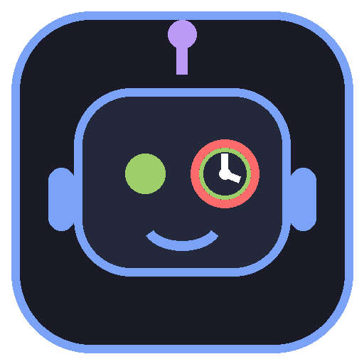

⏱️
Floating Pomodoro above everything
A small timer that stays on top of the screen while you work in any app. Focus periods, a short break, and an automatic long break every 4 cycles — with sound and notifications.
Version latest available for Windows 10/11
One productivity system that brings together a floating Pomodoro timer above every app, projects and tasks with progress, an AI coach, and sync with Joplin and Google — with a bilingual interface and light & dark themes.
Design the landing page
Project: Website · 2/5 tasks
Design the landing page #task
Projects/Lifebot/Tasks · todayFeatures
Instead of opening five apps: timer, tasks, projects, sync, and analytics — all in one lightweight window.
A small timer that stays on top of the screen while you work in any app. Focus periods, a short break, and an automatic long break every 4 cycles — with sound and notifications.
Group tasks into projects and get the percentage automatically 2/5 · 40%. Move an existing task into a project, or create one from the same dialog.
A morning plan, help with excuses (“no time”, “can’t start”), and a daily review. Runs with Gemini, and without a key it still gives useful offline advice.
Your tasks land instantly in Projects/Lifebot/Tasks with tags and a due date, and you can pull Joplin to-dos back in one click — duplicates are skipped.
Log finished focus sessions as calendar events automatically, and push/pull Google Tasks. The “Test connection” button really checks your permissions.
Focus minutes over the last 7 days, time per category, your streak, and completed task counts — all from your own data.
A Dark (Tokyo Night) and a Light (Paper) theme, plus custom accent color, size, opacity, and background — the widget adjusts its contrast automatically.
No release pages, no manual downloads: the app downloads the new installer with a progress bar, installs it, and restarts itself.
Everything is available from the command line (add, complete, projects, stats, sync) and through a local HTTP API you can protect with a token.
Designs
Four ready-made designs for the floating widget — switch between them in a second from Settings.
Glass Pill — calm frosted glass with a colored rim. The default.
Getting started
A single file for Windows 10/11 — no Python, no complicated setup. Your data lives in %APPDATA%\Rakez\data and survives every update.
Add tasks, group them into projects to see progress, and connect Joplin or Google if you want automatic sync.
The widget stays above every app. When a session ends you get a notification, and the time is logged in your analytics and calendar.
Integrations
Every integration is optional — the app is fully functional without them.
Two-way task sync, tags, and due dates. A dedupe command cleans up duplicates.
Every finished focus session is logged as an event in your calendar automatically.
Push and pull tasks between Rakez and Google Tasks — no copy-paste.
Powers the Hermes coach online. Without a key the app falls back to a built-in offline plan.
Download
Version latest for Windows 10/11 · completely free · no sign-up.
The installer is not signed with a Code Signing certificate, so Windows SmartScreen may show “Unknown publisher”. Press More info → Run anyway; the publisher in the file properties is Mostafa Elwakil.

Rakez ركّز
AI Coach & Pomodoro
FAQ
Yes. No accounts and no subscriptions. The AI coach and Google options are optional and use your own keys, so Rakez never charges you.
No. Everything is stored in a local database on your PC. Sync only happens if you enable Joplin or Google yourself, and then it goes straight to the service you chose.
Because the installer is not digitally signed with a paid Code Signing certificate. That does not mean it is unsafe; the publisher inside the file is Mostafa Elwakil. Choose More info → Run anyway.
Yes — the Pomodoro timer, tasks, projects, analytics, and designs all work fully offline. Internet is only needed for the Gemini coach, sync, and updates.
Create an OAuth Client of type Desktop app in Google Cloud Console, enable Calendar and Tasks, add your email under Test users, then paste the Client ID and Secret into Settings and press Authorize, then Test connection.
Nothing. Your data lives in %APPDATA%\Rakez\data, separate from the program files, so it stays exactly as it is after every update.
Linux: you can build from source with packaging/build_linux.sh. macOS is not officially supported yet — the app is built with PyQt6 so it should run, but there is no ready-made installer.
Install Rakez, write one task, and press play. The rest is easy.